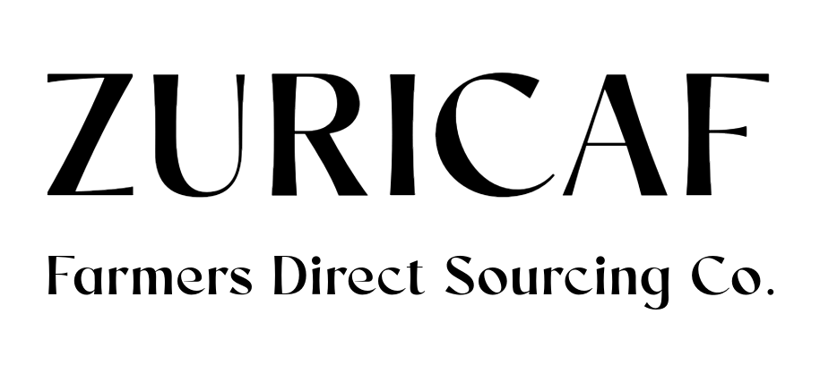
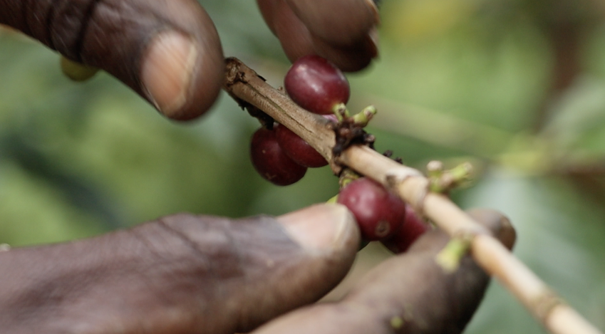

FCA Hamburg/Bremen • FOB Mombasa • DDP Europe
Request offers
We deliver sustainably grown green coffee directly from Uganda – without detours and with full transparency. Our network spans cooperatives in Mount Elgon, Rwenzori, Masaka, Luwero and West Nile.
As part of the international Slow Food movement we stand for good, clean, fair.
A diverse mosaic of flora and fauna is essential for healthy agro‑ecosystems. Different species deliver key ecosystem services – from pollination to pest control. Studies like Hooper & Vitousek (1997) show: the higher the diversity, the more climate‑resilient a system becomes.
Diversity also pays socially: parallel cultivation of different crops allows smallholders to harvest year‑round, stabilise income and differentiate from the bulk market.
What’s behind the name “Zuricaf”? – zuri (Swahili for “beautiful”) + CAF (Coffee). In short: beautiful Ugandan coffee.
We love diversity and believe in its integral power to strengthen ecosystems and communities. Together with Canephora as well as Liberica and Excelsa farmers – and Slow Food Uganda – we explore the potential of climate‑resilient coffee specialties.
Status quo: exchange & pilot phase – first micro‑lots expected in 2026; international trade not yet started.
| Region | Type | Main Crop | Fly Crop |
|---|---|---|---|
| Mount Elgon (Bugisu) | Arabica | Oct – Mar | May – Jul |
| Rwenzori | Arabica | Sep – Dec | Mar – May |
| Masaka | Canephora (Robusta) | May – Aug | Oct – Jan |
| Luwero | Robusta / Liberica | Oct – Feb | Mar – May |
| West Nile | Arabica | Oct – Jan | Apr – Jun |
We’ll get back to you within 24 h.
Request offers Book a call